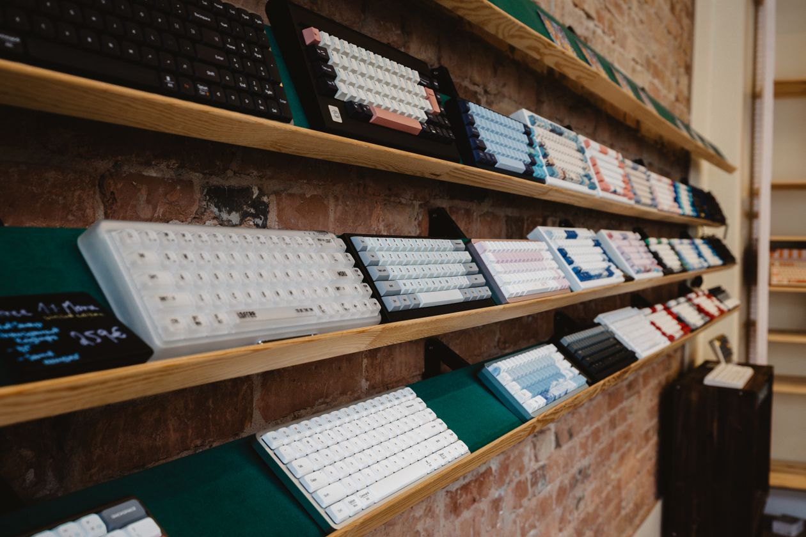

The bench
I am Ilya Sorin. I started tuning switches at a kitchen table in 2021 because the board I typed on all day felt like gravel and nobody would tell me what, exactly, a tuned switch had had done to it. Three years of build sheets later, the kitchen table is a bench in Portland, the sheets became this shop, and the rule survived intact: write down what you did, measure what you claim, print the state of everything.
Keycap Vault runs the way a small batch has to. I design or commission the colourway, I run the group buy, I stand at the factory end of the queue like everyone else, and I do the bench work — tuning, builds, measurements — myself. When a run is delayed, the delay is mine to announce; when a number is printed on this site, I am the one who measured it. There is no support department to hide behind, which is precisely why the terms below are written the way they are.
The shop sells in numbered drops because that is the honest shape of small manufacturing: a design exists, a window opens, money is gathered, a factory makes a finite number of things, and the things ship. Shops that pretend otherwise — permanent stock, instant restocks, dates stated to the day — are borrowing confidence they have not earned. I would rather print a range and a reason.

The bench, on paper
- Who
- Ilya Sorin — designer, buyer, bench hand, support desk
- Where
- SE Morrison Street, Portland, Oregon
- Since
- First drop (Paper Crane) 2023 · tuning since 2021
- Gauge
- Digital push–pull force gauge, bench-calibrated each batch
- Rule
- Measured, not marketed. Printed, or it did not happen.
How a drop runs
Design and colourway proof
The set is drawn, then proofed on printed samples. Colours are argued about at this stage, on paper, where arguing is cheap — not after manufacture, where it is not.
Sampling
The factory makes a small run. Keycap colours go through match rounds — Drop 05 needed two, and the failed first round is in its case file. Switches are sampled and measured; the bench sheet (Table B1) is written from the sample batch.
Group-buy window
The window opens with the price, the production range and the refund terms printed beside the buy button. Money taken in the window is a preorder. Nothing about that is dressed up.
Production
The run joins the factory queue — behind larger orders, because that is how factory queues work. If anything slips, buyers hear it within 10 days of the shop knowing, with the reason and a revised range.
Quality control
Counts are counted. Switch batches are re-sampled on the gauge against the bench sheet. A run that fails QC is remade or refunded — the buyer's choice, stated in the terms before the window ever opened.
Dispatch, then extras
Group-buy orders ship first, all of them. Only then are leftovers counted, labelled as extras, and listed on the index — at the group-buy price for switches, with the count printed.
The honesty page
A group buy is a strange purchase: you pay for a thing that does not exist yet, made by a factory you will never see, on a schedule nobody fully controls. Most shops describe it in the language of ordinary retail and hope you do not notice the difference. Here is the difference, printed.
Your money, before production
Money taken in a group-buy window is a preorder. It is held against the run and it is refundable in full — every cent, no reason needed — at any point until production starts. When production starts, the money goes to the factory and the refund right narrows to the failure terms below. The date production starts is announced to buyers before it happens, so the change is never a surprise.
When a run is delayed
You hear about it within 10 days of the shop knowing, by email, with three things in it: what happened, what it does to the schedule, and the refund position. Schedules are then given as ranges. A shop that gives you a new exact date after missing the first one is guessing in a confident voice; Drop 06's file shows what we send instead.
When a run fails
If a run fails quality control beyond remedy, the choice is yours: wait for a remake, or take a full refund. If the factory fails outright, refunds are issued from the run's held funds before any other claim on them. This has not happened at this shop; the term exists because “it has not happened” is not a policy.
What “lubed and filmed” means here
The phrase is used loosely in this trade, so on this bench it is a list, per switch, in order:
Housing opened once. Stem rails and bottom housing brushed with 205g0 — a thin coat, not a bath.
0.125 mm switch film fitted between the housings, so the top housing seats without play.
Springs bag-lubed with 105 oil. If you ordered a spring swap, the fitted weight goes on your build sheet.
Nothing else. No stem polishing, no spring clipping, no mystery steps — if it is not on this list, it was not done to your switches.
Tuning is charged per switch fitted in the board, never per switch bought — the spares from your packs stay in the bag, untuned, and uncharged.
Why there are no sound tests
Buyers ask for them, so the refusal gets a paragraph. A sound test is a recording of a board you are not buying, in a room you are not in, on a desk you do not own, through a microphone you cannot calibrate — and it is then used to sell you a switch. This shop will not do it. What a switch does can be measured: actuation force, the point it fires, the travel it has. Those numbers are printed in Table B1, with the instrument named and the tolerance shown as the spread we observed. If a number cannot be printed, we do not make the claim.
Engagement terms
| Build bookings | Taken through the contact page or by email. The planner's total is the price; if a part you chose is out of stock when your slot comes up, you are told before any money moves, with the nearest measured alternative priced beside it. |
|---|---|
| Turnaround | Builds are quoted as a range in working days at booking — currently 10–15 — and the range is the commitment. A build that will miss its range is reported before the range ends, not after. |
| Your parts | You may send your own switches or kit for bench work. They are logged on arrival, worked on in the order booked, and returned with the build sheet. The bench is not responsible for defects a part arrived with; those are reported, with the measurement, before work starts. |
| Shipping | In-stock lines dispatch within 5 working days of order. Group-buy items dispatch in their printed window. Built boards ship after the 24-hour typing test, never before it. |
| Returns | In-stock, unopened: 30 days, you pay return post. Built-to-order: covered by the build sheet — if the board disagrees with its sheet, return shipping is ours and the fault is fixed or the build refunded. |
| Extras | Leftovers from a run are sold as extras, labelled extras, after every group-buy order has shipped. Counts are printed on the index and decrease as they sell. |